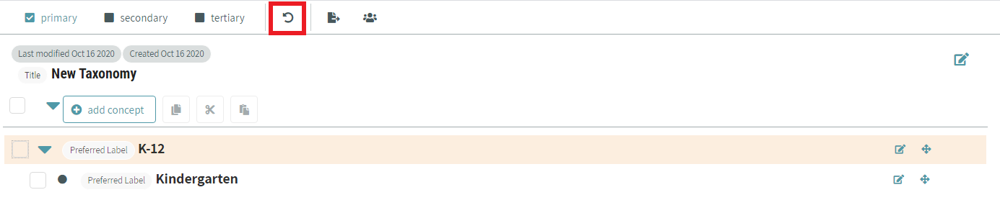
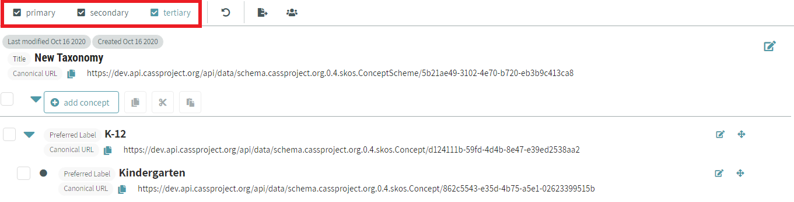

# Taxonomy Management
Note: In Credential Engine instances of CAT, taxonomies are referred to as concept schemes.
Taxonomies can be used to categorize and label competencies in frameworks. The Taxonomies page can be visited by clicking on the Taxonomies icon on the left side bar highlighted by the red box in the image below.

On this page, taxonomies are shown with their names in bold. Beneath the name, you can see when it was created and last modified. If you have permission to edit the taxonomy, it will say “Editable”.

# Sorting and Filtering Taxonomies
You can sort and filter the list of taxonomies by clicking the filter button next to the search bar. The button next to it clears any filters you’ve applied.

The filter button will open up a side panel to the right of the taxonomy list with options to sort and filter the list.

# Creating New Taxonomies
A new taxonomy can be created within CaSS Authoring Tools by pressing the “Create New” button at the top of the taxonomy management page.

When you click on the “Create New” button to create a new taxonomy, you will be required to enter a Taxonomy Name to your new taxonomy. Additional properties can be added by clicking the “add property” button.
# Adding Concepts to Taxonomies
To add concepts to your taxonomy, click the “add concept” button below the taxonomy details.

You can construct a hierarchy of concepts by checking the box to the left of a concept. The “add concept” button text will change to “add child”, which you can click to place a concept underneath the one you’ve checked.

# Editing Taxonomies and Concepts
To edit a single concept or taxonomy, hover over the item you want to edit and an edit icon will appear. Click the icon highlighted in red in the image below.

A modal will appear and you can edit the taxonomy or concept’s properties. This modal also allows you to delete the concept or taxonomy and export the object. Click “done” when you’ve finished making changes.

You can add new properties to your object from here too by clicking the “add property” button at the bottom of the modal. You’ll see a list of properties that are available to add. Select the property you’d like to add, enter in the value, and click “save property”.

If there’s a property you’d like to add to multiple concepts, use the checkboxes to select the concepts you want to edit and click “edit multiple”.

You’ll see a list of properties that are available to add. Select the property you’d like to add, enter in the value, and click “apply to multiple”.

If you make a mistake while editing, click the undo button in the bar at the top of the page to revert your most recent changes.

# Changing Concept Hierarchy
There are several ways to move concepts around in the hierarchy. You can drag and drop the concept to the spot you’d like to move it to by hovering over the concept. The icon highlighted in the image below will appear and you can click on it, hold down, and drag the concept to the appropriate position.

You can also move a concept by selecting its checkbox. Click the cut or copy icon highlighted in red in the image below, select another concept, and click the paste icon.

With one concept selected, you can move it with keyboard commands as well. You can cut, copy and paste, or use the arrow keys to move it to the position you want.
- Tab - Switch focus between elements on the page
- Space - Select the element currently in focus
- Shift + X - Cut competency
- Shift + C - Cut and copy competency
- Shift + V - Drop competency
- Shift + ↑ & Shift + ↓ - Move concept up and down in the list.
- Shift + ← & Shift + → - Move concept indent and outdent in the list
# Managing Users and Sharing a Taxonomy
To control who can view and edit a taxonomy you own, click the “manage users” button highlighted in red in the image below.

You can see who the admins and viewers of your taxonomy are, and add or remove users and organizations. This view also has a shareable link to your taxonomy that you can copy to your clipboard and give to someone else.

# Viewing Taxonomies and Concepts in More Detail
By default, only primary properties are shown on a taxonomy and concepts. To see some additional properties, click “secondary” in the panel at the top of the screen. This will show all primary and secondary properties that have values. To see all properties that have values, click on “tertiary”.

# Exporting a Taxonomy
Once you’ve created or imported a new taxonomy, exporting the taxonomy is a relatively simple process. Users must first view their taxonomies through the taxonomy tab in the CaSS Authoring Tool and select the desired taxonomy to be exported. Once the taxonomy is selected, users can select the export button at the top of the screen and will be prompted to choose their desired file format to export that taxonomy.

Users will be prompted with the window displayed below and can select their desired file format from the options provided in the dropdown menu.

Once the desired format is selected users can select the “export file” button at the bottom right corner of the window and the taxonomy will be downloaded to your computer or opened in a new tab of your browser.
# Importing a Taxonomy
The process of Importing a new taxonomy is also relatively simple. From the taxonomy tab on the sidebar, users have the ability to view all existing taxonomies within the system. At the top of the page is a list of options which allow users to import and create new taxonomies into the database of existing taxonomies.

After clicking the import taxonomy button users will be prompted with a new page where they have the ability to select the source of the taxonomy they are trying to import. Users have the ability to upload csv and json files. Examples and templates are linked from the panel on the right side of the screen. Users can drag the taxonomy into the dotted window displayed below.

Once imported users can select the process files button and the desired taxonomy will be imported into the your CaSS Authoring Tool database.